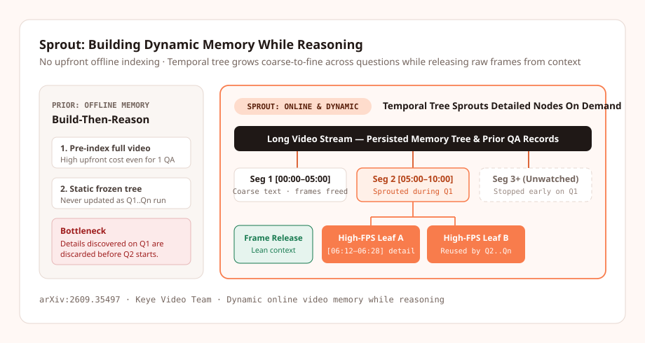

Sprout: Building Dynamic Memory While Reasoning for Agentic Video Understanding Sprout：面向智能体视频理解的边推理边构建动态记忆框架
An online temporal memory tree that sprouts fine-grained nodes on demand while answering questions—eliminating upfront offline indexing and releasing raw video frames from context.
无需前置离线建库：在多轮问答过程中按需生长细粒度时序记忆树，记录文本记忆后即时释放原始视频帧上下文，并跨问题持续复用与更新。

Abstract摘要
Long video understanding relies on video memory to overcome the context limits of multimodal large language models. Existing methods follow a build-then-reasoning pipeline: memory is built offline for the entire video, then reasoned over as a static source. In practice a long video is shared by several questions, and this pipeline is costly at both ends: with few questions, building memory for the whole video costs far more than answering them; with many questions, the memory is never updated, so what is learned while answering questions is lost to the next question.
We introduce Sprout, an agentic framework that builds memory while reasoning: a temporal tree that sprouts detailed nodes as questions are answered. The agent watches the video segment by segment at a low frame rate, stopping when the current question can be answered, remembers each segment as a coarse node of the tree, and revisits key intervals at a higher frame rate to refine the tree with recovered details. Once a segment is recorded as text, its video input is removed from the context history while the original video remains reachable through video tools. Across benchmarks on three models, Sprout achieves competitive or improved accuracy relative to representative offline memory methods with no upfront construction stage and lower context cost per question.
现有长视频记忆方法普遍遵循“先离线建库、再静态推理”管线：问题少时全片建库成本过高，问题多时记忆又无法随推理持续更新。本文提出 Sprout 智能体框架，在推理过程中动态构建时序记忆树：按低帧率逐段观看并在可作答时提前停止，将已看片段记为粗粒度节点，对关键区间按高帧率复看并生长细粒度子节点；文本入库后立即从上下文释放对应视频输入，同时将记忆树与历史问答跨问题持久化。在三个模型与多项基准上，Sprout 无需前置建库即可取得优于或持平代表性离线记忆方法的准确率，且每题上下文成本显著降低。
Key Highlights核心亮点
-
Online memory construction without upfront full-video indexing免前置离线建库的在线动态记忆 Segments are watched lazily at low FPS and stopped as soon as the question is answerable, avoiding wasted indexing on unseen parts of hour-long videos. 按低帧率分段按需浏览、满足作答即停止，彻底避免在未涉及的视频片段上浪费预索引开销。
-
Frame release keeps long-horizon agent context compact帧释放机制大幅降低多轮上下文膨胀 Removing raw video frames after writing textual memory nodes cuts accumulated visual tokens substantially while preserving full accuracy—and even improving performance in several settings. 将已看片段压缩为文本节点后立即从上下文移除原始视频帧，既显著降低上下文开销又保持乃至提升准确率。
Citation引用格式
@article{keyevideo2026sprout,
title = {Sprout: Building Dynamic Memory While Reasoning for Agentic Video Understanding},
author = {Keye Video Team},
journal = {arXiv preprint arXiv:2609.35497},
year = {2026},
url = {https://arxiv.org/abs/2609.35497}
}